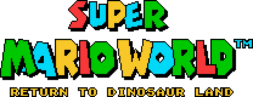

By Valtteri
The Story
Bowser and the Koopalings have kidnapped princess Peach and trapped her in the Valley of Bowser. The Koopalings have stolen the Yoshi eggs yet again and they've rebuilt their castles around Dinosaur Land. It's up to the Mario Brothers to save the eggs and the princess. The road to the secret entrance of the Valley of Bowser is full of dangers, such as fortresses and their bosses, Reznor, Magikoopa and Big Boo, who you will have to fight.
Worlds and bosses
- W1 - Yoshi's Island (Larry Koopa)
- W2 - Donut Plains (Morton Koopa Jr.)
- W3 - Vanilla Dome Underground (Wendy O. Koopa)
- W4 - Vanilla Dome Overworld + Twin Bridges + Cookie Mountain (Iggy Koopa)
- W5 - Forest of Illusion (Roy Koopa)
- W6 - Chocolate Island (Lemmy Koopa)
- W7 - Ice Cream Island (Ludwig von Koopa)
- W8 - Valley of Bowser (Bowser Koopa)
- W9 - Special Zone (???)
- Warp Zone (rooms with Yoshis that are unlockable with stars)